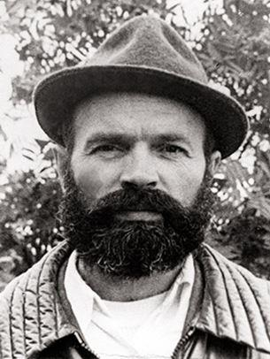
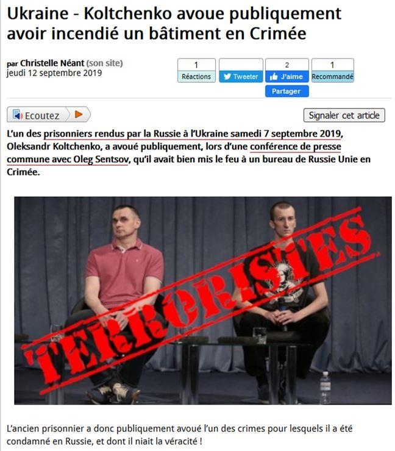
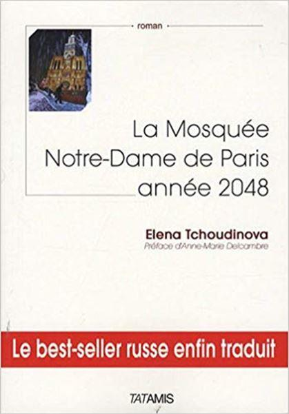

Les conversations bruyantes sur le « prisonnier politique » Oleg Sentsov ont longtemps résonné dans les pages des journaux et à la radio. « Un cinéaste, un homme d'art accusé de préparer un acte terroriste », ont écrit tous les médias libéraux. « Il est torturé ! Il n'est responsable que de ce qu'il considérait comme la Crimée comme ukrainienne ! » Bientôt, les Libéraux d'autres pays sont venus au secours des Libéraux russes.
En 2018, l'OSCE a adressé une pétition au chef du ministère russe des affaires étrangères Lavrov, appelant à la libération du « patriote ukrainien Sentsov ».
Des personnalités célèbres ont immédiatement rejoint les demandes de libération de Sentsov. Le secrétaire général du conseil de l'Europe a fait la même demande. Pour Sentsov, l'ONU s'est émoussée.
Sentsov n'est pas à blâmer !! C'est un prisonnier politique ! Il est une victime ! Il a été calomnié parce qu'il aime l'Ukraine ! Sentsov a déclaré en signe de protestation une grève de la « famine politique ». Le « Novaja gazeta » (une édition très populaire) est sorti tous les jours avec l'inscription en grandes lettres « c'est le dixième jour de la grève de la faim Oleg Sentsov... c'est le quinzième jour de la grève de la faim Oleg Sentsov »... Quand le cinquantième jour est arrivé, tout le monde riait. Tous sauf les Libéraux. Et pourtant cela n’empêcha pas plus tard de lire : « c'est le centième jour de la faim Oleg Sentsov »…
Dans ma jeunesse, quand j'étais en URSS, je connaissais de vrais prisonniers de conscience qui organisaient une grève de la faim politique dans les prisons. C'est très effrayant. On m'a parlé de cette grève de la faim.
Même si une personne boit beaucoup d'eau, ses cordes vocales se dessèchent pendant environ trente jours. Il parle avec difficulté. Sa voix est rauque. Sa peau ressemble à des vêtements suspendus sur un cintre. Il est faible. Il a perdu beaucoup de poids. Il marche à peine.
Le dissident Anatoly Marchenko est mort de faim en 1986, exigeant la libération de tous les prisonniers politiques. Il a été affamé incroyablement longtemps-117 jours. La plupart du temps, Marchenko ne pouvait pas sortir du lit.
Habituellement, ils meurent beaucoup plus vite. Cinquante, soixante-dix jours.
Sentsov n'a rien mangé ... 150 jours.
Qu'est-ce qu'on nous a montré sur la vidéo ? Une personne en bonne santé qui a suivi un régime et s'est débarrassée de l'excès de poids.
La grève de la faim politique est un geste sacré de désespoir, le dernier droit de l'homme. Avec l'aide de tout le monde civilisé, la grève de la faim politique est devenue une farce, une clownerie.
Le concept lui-même a été discrédité lorsque, pour le meurtre de deux journalistes, une autre « héroïne » ukrainienne, Nadezhda Savchenko, a été arrêtée. Elle n'a « rien mangé » pendant environ 90 jours. En même temps, elle a chanté des chansons au tribunal. Savchenko pesait 85 kilos. En près de 90 jours, elle en a perdu 15. Bonne alimentation contre l'excès de poids !
Mais tous les libéraux de gauche ont pleuré.
Qu'est-ce que ces gens n'ont pas ? N'ont-ils pas de mémoire ou de raison ?
Mais voici une tournure inattendue des événements. Les prisonniers ont été échangés. Sentsov est libéré de prison et emmené à Kiev. Il donne une conférence de presse.
Notons une circonstance importante. Il n'est plus à Moscou, il est en Ukraine. Pas de « menaces », pas de « dangers ». Mais le même Sentsov, à propos duquel les journaux ont écrit qu'il a été condamné pour de fausses accusations, le même Sentsov, qui a prouvé son innocence par une « grève de la faim politique », a calmement admis devant les caméras de télévision que oui, a mis le feu à la branche du parti politique « Russie unie » à Simferopol. Pas seul, avec des complices.
Une journaliste a demandé : « Avez-vous réalisé que le bureau de ce parti est dans un immeuble d'habitation ?»
« J'ai participé à l'incendie criminel, mais je ne savais pas que le bureau était dans un quartier résidentiel », – a répondu Sentsov.
Sentsov attire l'attention sur le fait que «il n'y avait pas de gens dans le bureau ». Mais les gens étaient dans la maison ! Qui ne peut pas comprendre ce qui menace l'incendie dans le bureau au-dessus duquel se trouvent les appartements ?
Comment pouvez-vous mettre le feu au bureau et ne pas voir l'appartements ?!
L'incendie a éclaté dans la nuit. Si un incendie avait éclaté, les gens auraient pu s'étouffer dans leur lit.
Lors d'une conférence de presse, Sentsov a confirmé qu'il était membre du groupe qui avait planifié les attentats. Cependant, il a dit que « ce n'était que des conversations ». Mais le fait est un fait : il y avait un groupe qui parlait d'explosions.
Pour que le monde occidental sympathise avec Sentsov, il est souligné que le groupe avait prévu de faire sauter le monument à Lénine sur la place.
Le monument à Lénine, bien sûr, est dégoûtant pour tous les gens décents. Mais il y a une nuance très intéressante. L'Ukraine ne fait pas partie de la Russie depuis 1991. La Crimée est revenue en Russie en 2014. Pourquoi les autorités ukrainiennes n'ont-elles pas jugé nécessaire de le démanteler en 23 ans ? Monument à Lénine – l'héritage de l'URSS. Qu'est-ce que la Russie moderne a à voir avec cela ? Les faussaires de la réalité cherchent des images : la Russie est venue en Crimée et a établi un monument à Lénine. Mais c'est la même bêtise !
Cependant, il y a un fait plus intéressant : en plus du monument à Lénine dans cette société secrète, ils voulaient faire sauter un mémorial en mémoire de la Seconde guerre mondiale.
Les russes et les français n'étaient-ils pas alliés dans cette guerre contre le nazisme ? Mais quand la Russie parle du danger du nazisme en Ukraine, on ne la croit pas. Et quand les explosions commencent, les sacrifices humains sont une question de temps.
Disons la vérité : en 2014, les services secrets russes ont arrêté un membre d'un groupe terroriste. En 2018, l'ex-président Polonais Lech Walensa a proposé de nommer le terroriste au prix Nobel de la paix. La conférence de presse, au cours de laquelle Sentsov a reconnu volontairement son implication dans l'incendie criminel et son appartenance à une communauté terroriste, a eu lieu à la mi-septembre.
Le 1er octobre, le président français Emmanuel Macron a rencontré le terroriste. Le président français a rencontré le porteur d'une fausse grève de la faim politique et d'un vrai terroriste. Comment est-ce possible ?
Il est probable que la tournée victorieuse du criminel se poursuivra. Et le mensonge continuera.
E.C.
La rédaction de Méthode recommande l’ouvrage d’Elena Chudinova (rebaptisée par la maison d’édition Tchoudinova…)
Parue en 2005 à Moscou et traduite en français en 2009, cette dystopie a connu un grand succès auprès du public. Traduite en sept langues, ce livre a été le premier à prévenir du danger de l'expansion de l'islam radical. Pourtant « La Mosquée Notre-Dame de Paris : année 2048 » ne se limite pas à faire peur, mais apporte aussi une réponse à la question : Qu'est-ce que les Européens doivent-ils faire pour prévenir cet avenir effroyable ? « La Mosquée Notre-Dame de Paris » est avant tout l'œuvre de la pensée chrétienne. Les événements tragiques de cet automne rendent ce livre plus actuel que jamais. Les dix ans écoulés depuis sa première publication, ont donné raison à son auteur.
Partager cette page